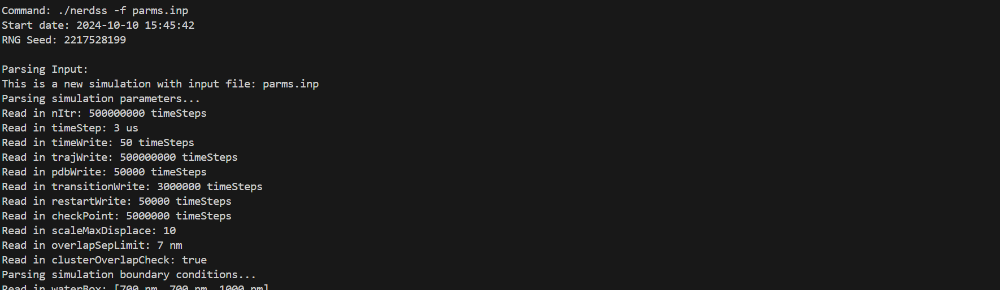

Introductory Tutorial
NERDSS has the advantage of perserving the geometries and orientation of molecules during reactions and also allows for simulations of timescales on the order of seconds to minutes thanks to the FPR algorithms that it uses. This makes NERDSS a powerful tool for simulating many distinct biological protein interactions and espically self-assembly processes.
In this tutorial, we will walk you through a simulation of clathrin self-assembly on the plasma membrane using NERDSS.
1. Obtaining input files
In order to start a new simulation, you need a parameter file with .inp extension, and all .mol file required by that parameter file. mol files specify the structure of specific molecule, including the location of all its interfaces, and both translational and rotational diffusion constants. inp files control reaction rules as well as simulation settings. (see Input and Output file section in the user guide for more info). All input files can be automatically generated using the provided GUI in the NERDSS package with intructions included in the user guide.
A full set of sample input files for this simulation is provided:
clat.mol
ap2.mol
pip2.mol
parms.inp
parmsMacroRate.inp // alternative parameter file with macroscopic rates2. Running simulations
Once you have the input files and the compiled executable nerdss file in the sample directory, you can run the simulation using the following command:
./nerdss -f parms.inp > log.txtIf nerdss is compiled correctly, the simulation should be running and the text outputs should be recorded in log.txt.
3. Getting the outputs
After the simulation is completed, you can find the output files in the same directory. NERDSS generates several output files that records many aspects of the system during the simulation including copy numbers of every molecule, numbers of bonds and complexes formed, and location of each molecule during the simulation time. More details on the different output files generated by NERDSS and the types of data that they record can be found in the NERDSS user guide. Users can obtain their perferred information from the output files. For example, here is a demonstration of an animation of the clathrin simulation generated using the PDB files outputted by NERDSS:
Some useful helper functions to analyze the NERDSS output files are included in our ioNERDSS package. Intructions for downloading
and using ioNERDSS can be found in more details in the ioNERDSS user guide.